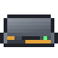

Terminals and access: pages
Terminals and access
Rack Consoles
The Rack Console, Rack Fabrication Console and Rack Schematic Console - terminals in a 1U rack drawer that slide out when you need them.
On this page
A Rack Console is a terminal folded into a 1U drawer in a Server Rack. It does the same job as a terminal on a cable, but it lives with the rest of your rack hardware and draws no attention until you pull it out. There are three, one for each kind of terminal:
| Console | Opens | Like |
|---|---|---|
| Rack Console | The storage grid | an Access Terminal |
 Rack Fabrication Console | The storage grid and a 3x3 crafting grid, kept in the console | a Fabrication Terminal |
| Rack Schematic Console | The Schematics and Jobs tabs | a Schematic Terminal (see Crafting jobs) |
Each is made from the matching terminal, so you can turn a terminal you already have into a console:
Installing one#
A console is a 1U rack device. Install it like any other: open the rack's front door and use the console on the unit you want, or place it in the rack screen.
Consoles need room to open. An open console's screen stands in front of the rack where the drawer of a console just above it would slide out, so two consoles must be at least 8U apart (counted from the bottom of one to the bottom of the next, which leaves 7U free between them). The rack refuses a console that is too close to another, and so do Rack Elevation plans.
The drawer and the lid#
Screenshot needed
A Server Rack with its front door open and a Rack Console fully out: drawer and keyboard extended, the screen folded up. Other devices above and below it
docs/site-src/images/terminals/rack-console-open.png · 1600x900
With the rack's front door open:
- Right-click the console. The drawer slides out (8 ticks), then its screen folds up (6 ticks).
- Right-click it again while it's out and its network is online, and the terminal opens. If the network is offline, the action bar says "Network offline".
- To put it away, sneak-right-click it. The screen folds down first, then the drawer slides in.
It also folds itself away when you close the rack's front door (screen and drawer snap shut together, ahead of the door) or when nobody is within 4 blocks of it.
A console drains rack.rackConsoleDrain (default 1) FE/t, plus rack.rackConsoleOpenDrain (default 2) FE/t more while it's out. It uses one lane, like most rack devices (none if an L2 Switch in the rack pools it).
Looking at a console through the open door shows its popup: whether its network is online, how many items the network stores, and whether the drawer is open or closed.
Using the terminal#
Once open, the console's screen is the same as the terminal it replaces: search, tabs, sorting, taking and storing, crafting requests (see Access and Fabrication Terminals). Opening a console needs Rack access on the rack's network, because you are working at the rack, and the terminal then needs the same permissions as any other terminal.
The Rack Fabrication Console keeps its 3x3 crafting grid in the console itself. When you take the console out of the rack, the grid's items come out with it.
A console has no settings panel in the rack screen; picking one there shows only its name and status.
Consoles with the old Memory Die upgrade#
Older versions of the mod gave a Rack Console its crafting grid through a Memory Die upgrade. That upgrade no longer exists: the Rack Fabrication Console replaces it.
A Rack Console saved with the upgrade becomes a Rack Fabrication Console the next time its rack loads. It keeps its crafting grid, and the Memory Die pops out of the rack as an item on the ground. The next player to open it is told: "This Rack Console was converted to a Rack Fabrication Console". Nothing else changes, and you don't need to do anything.